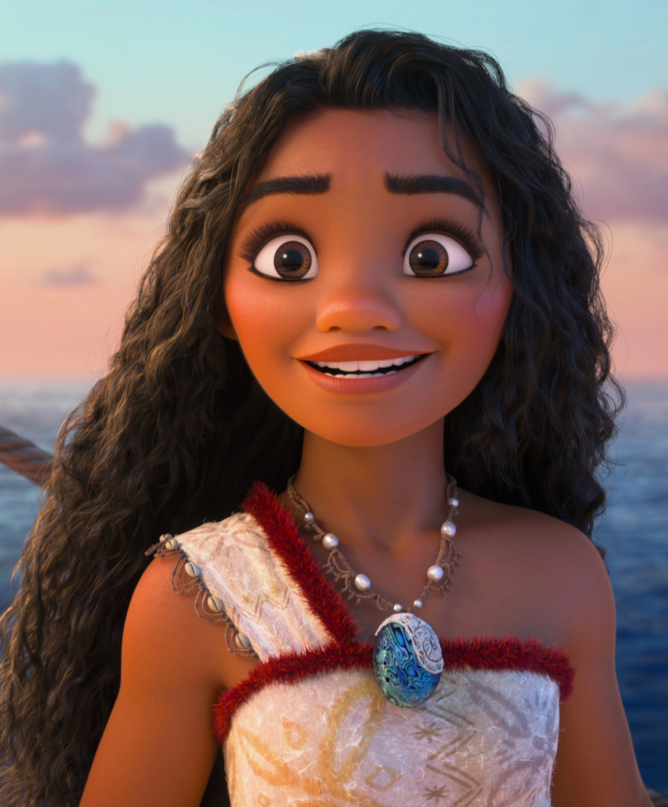
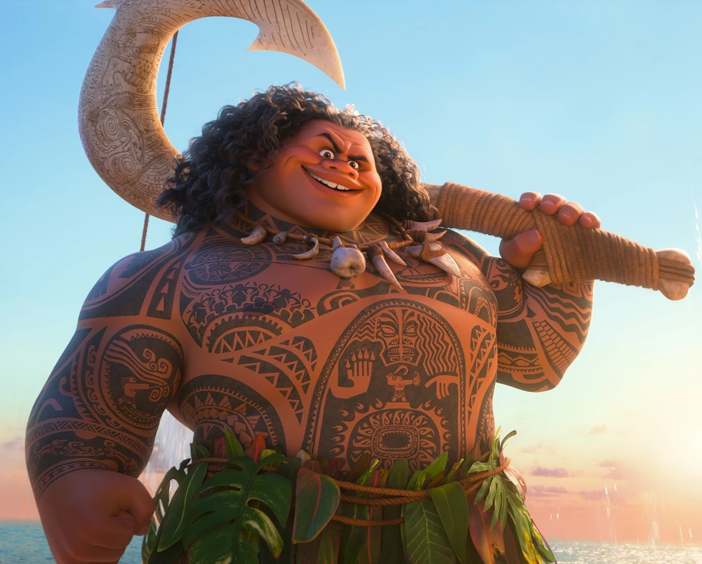
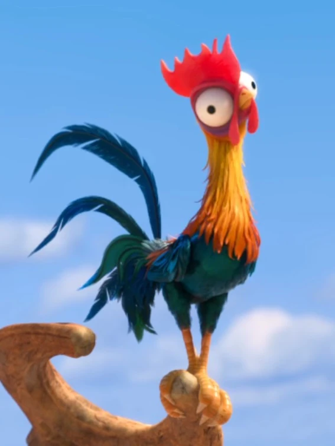
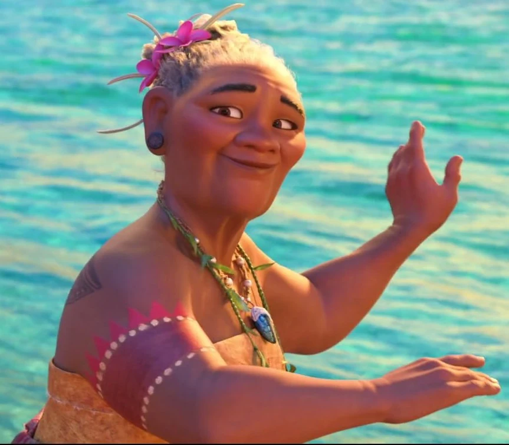
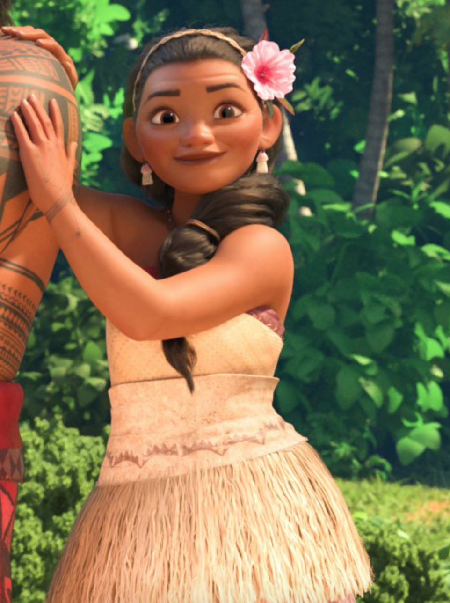

| Character | Description | Personality |
|---|---|---|
|  |
Moanais the vibrant, tenacious, and optimistic daughter of the Chief of Motunui, thriving on her island but drawn to the ocean. When her island is threatened by a dark force, Moana sets sail outside the reef and her comfort zone to right a wrong, save her people, and find the answers she's been searching for her whole life. |
Moana is adventurous, determined, courageous, and compassionate. She is independent, curious, and willing to defy expectations to help others and save her people. |
|  |
Mauiis a shape-shifting demigod in Moana. Known for his mischievous and self-centered nature, he is a powerful figure who once stole the heart of Te Fiti, causing chaos. Despite his arrogance, he has a good heart and ultimately helps Moana on her journey, showing growth and redemption. |
Maui is confident, bold, and playful, but also cocky and a bit self-absorbed. Over time, he shows vulnerability and growth, revealing a deeper, more caring side. |
|  |
Hei Hei the Roosteris one dumb rooster, the village idiot, in fact. When the clueless chicken accidentally stows away on Moana’s canoe, he lands a front-row seat for her epic journey. |
Hei Hei is goofy, clueless, and somewhat oblivious. He’s playful and often gets into trouble due to his lack of intelligence, but he’s loyal and innocent, adding comic relief to Moana’s adventure. |
|  |
Gramma TalaMoana's confidante and best friend, who shares her granddaughter's special connection to the ocean. Although her son Tui, the chief of Motunui, is a no-nonsense leader, Gramma Tala most definitely dances to the beat of her own drum. |
Tala is spirited, eccentric, and independent. She is fiercely devoted to the idea of being true to yourself. As such, she never adhered to normality for the sake of fitting in, making her somewhat of an outcast, though she holds the reputation of "village crazy lady" with prideful awareness. |
|  |
Sinaalways has her daughter's back. Playful, sharp, and strong-willed, She appreciates Moana's longing to be on the water, but also wants to protect her daughter from the fabled dangers beyond the reef |
Sina is loving, protective, and supportive. She’s playful, sharp-witted, and strong-willed, balancing her appreciation for Moana’s adventurous spirit with a desire to keep her safe. |